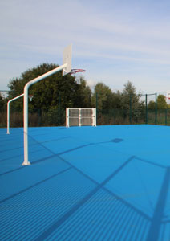

|
|
 |
| NOUVELLE CARTE D'ACCÈS EN DÉCHÈTERIE |
Afin d'améliorer l'accueil des usagers, le SMITOM du Nord Seine et Marne procède actuellement au remplacement de l'ensemble des cartes d'accès en déchèterie.
Opérationnelle à compter du 1er janvier 2014, cette carte sera nécessaire
afin de bénéficier du service des déchèteries.
Plus pratique, elle permettra : le dépôt annuel de 18 m3 réels de déchets
en déchèteries (et non plus 18 passages), et sur simple demande au gardien de connaître l'évaluation totale de vos dépôts de déchets depuis le début d'année. De plus, le prêt de votre carte à une tierce personne identifiée sera désormais possible.
Une mesure qui vise à améliorer le suivi des déchèteries et de s'assurer
de l'accès à ces équipements aux seuls résidents du territoire du SMITOM du Nord Seine et Marne.
Pour obtenir cette nouvelle carte d'accès, procurez-vous le dépliant réservé à cet effet et transmettez aux services du SMITOM l'intégralité
des pièces demandées : photocopie
de la pièce d'identité et de la dernière feuille d'impôts locaux, ainsi que vos coordonnées complètes.
> www.smitom-nord77.fr
> Télécharger le formulaire de carte d'accès |
|
 |
| |
 |
Depuis quelques années, la commune met à disposition des administrés des emplacements dédiés aux sapins usagés.
Cette année encore, à partir du 26 décembre 2013 et jusqu'au 25 janvier 2014, vous pourrez déposer votre sapin dans l'un des lieux suivants :
- Dans le centre urbain : Cours du Danube (à proximité de la crèche Le Carrousel des bébés) et Cours du Tage (à proximité des bornes à verre),
- Dans le bourg : Place d'Amilly, Boulevard Champ du moulin (à l'angle de la rue des Gassets), Place Thomas le Pileur.
> Visualiser les emplacements des dépôts de sapins usagés
Renseignements : Services Techniques
Tel : 01.60.43.66.81 ou s-technique@mairie-serris.net |
| |
|
Enquête sur l'emploi, le chômage et l'inactivité.
L'insee réalise, du 12 au 27 novembre, une enquête sur l'emploi, le chômage et l'inactivité.
L'enquêteur, muni d'une carte officielle, interrogera par téléphone ou par visite quelques-uns des administrés de Serris. Ceux-ci sont prévenus individuellement par courrier et informés du nom de l'enquêteur. Les réponses fournies lors des entretiens restent anonymes et confidentielles, comme la loi en fait la plus stricte obligation.
Cette enquête reconnue d'intérêt général et de qualité statistique est obligatoire. |
Les causes des perturbations d'éclairage ont été décelées. Les interventions réalisées par les services techniques et le prestataire ont permis un retour à un fonctionnement normal. |
| INSCRIPTION AU CENTRE DE LOISIRS POUR LES VACANCES DE NOËL |
L'inscription de vos enfants au centre de loisirs pour les vacances de la Toussaint 2013, aura lieu du mardi 12 novembre au vendredi 22 novembre 2013 (en fonction des places disponibles).
Pour vous inscrire, veuillez completer et retourner le formulaire correspondant au service Accueil Famille.
ATTENTION : le nombre de places disponibles étant limité, celles-ci peuvent se retrouver réservées en totalité avant la date limite du 22 novembre 2013. Aussi, nous vous invitons à effectuer vos démarches d'inscription le plus tôt possible.
Après la période d'inscription indiquée ci-dessus, aucune annulation ne sera prise en compte. Pour permettre une organisation anticipée et un accueil dans des conditions satisfaisantes d'encadrement et de sécurité, les inscriptions au-delà du nombre de places disponibles ainsi que les inscriptions hors-délais seront portées sur une liste d'attente. Les enfants sur liste d'attente ne pourront être acceptés sur le centre que dans la limite des places vacantes.
Afin d'éviter tout litige, un accusé-réception de la pré-inscription sera désormais remis aux parents, et une copie de cet accusé-réception sera transmise au directeur du centre de loisirs.
La facturation des jours de présences prendra en compte le formulaire d'inscription.
Dans le cas d'une première inscription, veuillez prendre contact avec le service Accueil Famille |
| |
|
| COLLECTE POUR LA BANQUE ALIMENTAIRE PARIS ÎLE DE FRANCE |
| Vendredi 29 et samedi 30 novembre, Auchan Val d'Europe |
Le vendredi 29 et le samedi 30 novembre prochain, le Rotary Club du Val d'Europe, en collaboration avec l'Oasis, l'épicerie solidaire du Val d'Europe, organise une grande collecte alimentaire en faveur de la Banque Alimentaire Paris Ile-de-France,
au magasin Auchan du centre commercial Val d'Europe.
Depuis 2002, grâce aux donateurs et avec plus de 90 tonnes de denrées collectées,
des milliers de familles démunies, dont certaines du Val d'Europe, ont ainsi été nourries.
Plus que jamais cette annéé, le Rotary Club à à nouveau besoin de tous vos efforts.
Donnez une petite partie de vos courses, et/ou participez avec eux à̀ la collecte, pour une heure, deux heures, une demi-journée ou plus, pour optimiser la collecte. Ils vous attendent !
Contact pour vous inscrire à̀ la collecte et vous joindre à eux dans la bonne humeur :
contact@rotary-club-valdeurope.org - Tél. : 06 21 48 11 63
Responsable del'Oasis : France JACQUES : 06 28 50 53 74
oasis77@sfr.fr
|
|
 |
| UN NOUVEAU TERRAIN MULTISPORTS |
|
Un nouveau terrain multisports ouvrira ses portes samedi 26 octobre, dans le centre urbain, rue du Rhin, en face du gymnase Olympe de Gouges.
Construite par le SAN et gérée par la Ville de Serris, cette structure sportive en accès libre est équipée de paniers de basket et de cages de handball.
N'hésitez pas à l'utiliser ! |
|
 |
| COURS DE MODELAGE SCULPTURE |
|
Depuis plusieurs années, Marie-Laure Griffe, artiste accomplie anime les cours de modelage sculpture pour adultes et enfants proposés par la commune.
Les cours de modelage-sculpture sont source d'épanouissement. Ils permettent à l'enfant et à l'adulte de développer leur propre créativité, guidés par leur imagination.a
Cette année, il reste encore quelques places disponibles pour les cours enfant/ados ( de 6 à 17 ans).
Ces derniers ont lieu dans les préfabriqués Robert Doisneau, à côté du Club Pré-ados, le mercredi de 10 h 00 à 12 h 00.
Nouveauté : les tarifs sont calculés en fonction du quotient familial.
Alors n'hésitez plus !
Renseignements et inscriptions auprès du Service Culturel
Centre Culturel de la Ferme des Communes - 8 Bd Robert Thiboust - 77 700 Serris
Horaires d'accueil du public : le mercredi 9h à 12h et de 14h00 à 18h00
Tél. : 06 88 21 74 77 / Courriel : culture@mairie-serris.net |
|
|
|
|
Avis d'enquête publique
La société Auvalis a présenté une demande pour être autorisée à exploiter un entrepôt logistique de stockage de matières et produits combustibles, Lot ACb, au sein d'une plate forme logistique, située sur le territoire de la commune de Serris, ZAC du Couternois.
Le Tribunal administratif de Melun a désigné Madame Sylvie Helynck, Urbaniste et Juriste, en qualité de commissaire enquêteur titulaire et Monsieur Marcel Linet, Ingénieur Général des Ponts et Chaussées, en retraite, en qualité de commissaire enquêteur suppléant.
Le commissaire enquêteur se tiendra à la disposition du public, à l'Hôtel de Ville de Serris, pour recevoir ses observations aux dates et heures indiquées ci-dessus : samedi 23 novembre de 9h00 à 12h00.
Toutes informations relatives au projet pourront être obtenues auprès de Monsieur Emmanuel Liscouet, Directeur technique de la société Auvalis, domiciliée, 5995 Chemin Départemental 6, lieudit « La Meunière » à Cabriès (13480). |
|
|
| RÈGLEMENT INTERCOMMUNAL DE LA PUBLICITÉ |
|
Règlement intercommunal de la publicité, des enseignes et pré-enseignes du Val d'Europe
Concertation sur le projet de réglement et de zonage
La révision du règlement intercommunal de la publicité, des enseignes et des pré enseignes du Val d'Europe a été engagée par délibération du comité syndical du SAN du Val d'Europe du 1er décembre 2011.
Conformément aux dispositions de l'article L 581-14-1 du Code de l'Environnement, le SAN peut recueillir l'avis de toute personne, de tout organisme ou association compétents en matière de paysage, de publicité, d'enseignes et pré enseignes, d'environnement, d'architecture, d'urbanisme, d'aménagement du territoire, d'habitat et de déplacements.
À cet effet, des registres et les documents seront à disposition du public à partir du lundi 2 septembre 2013 et jusqu'à l'arrêt du projet, pour recueillir toute observation en Mairies de Bailly Romainvilliers, Chessy, Coupvray, Magny le Hongre et Serris, ainsi qu'au SAN du Val d'Europe, aux jours et heures habituels d'ouverture.
Le projet de règlement et de zonage sera également consultable sur le site internet du SAN à l'adresse suivante : www.valeurope-san.f |
|
|
Dernièrement, plusieurs sociétés se sont autoproclamées comme mandatées par la commune pour réaliser des opérations de démarchage commercial. La Ville de Serris ne cautionne en aucun cas les agissements des représentants de ces sociétés et déplore l’utilisation de l’image institutionnelle de la commune sans son accord. En aucun cas la municipalité n’a autorisé ce genre de démarchage en son nom. Dans le cas contraire, la commune établirait une attestation officielle sur papier à entête de la mairie précisant clairement la mission confiée à la société et ses conditions d'exécution.
En l'absence d'un tel document, aucune entreprise ne peut se prévaloir d'être mandatée par la Commune.
Si la Ville de Serris décidait de mandater une société pour une opération commerciale, elle l'annoncerait sur son site internet www.mairie-serris.net et via sa newsletter. |
| |
|
Des Serrissiens nous ont informés avoir été dernièrement sollicités par téléphone pour un sondage téléphonique relatif aux prochaines échéances municipales à Serris.
La Société de sondage et le commanditaire n'étant pas mentionnés lors de ces appels, la Ville de Serris tient à préciser qu'elle n'est absolument pas à l'origine de cette consultation. |
| Opération Tranquillité Vacances |
| UNE APPLICATION SMARTPHONE POUR LE SITE DE LA VILLE |
|
Le site internet de la commune de Serris www.mairie-serris.net, a été adapté à la navigation sur Smartphones grâce à une application dédiée.
Via une interface spécifique, cette application vous permettra de retrouver sur vos téléphones portables des informations sur la collectivité déjà présentes sur notre site internet.
N'hésitez pas à la télécharger, elle est disponible gratuitement sur l'App Store (pour iPhone et iPad), Google play, Windows phone et Blackberry app world.
Vous pouvez scanner le flashcode ci dessous pour télécharger directement l'application sur votre smartphone. |
|
 |
 |
| RÉFORMES DES RYTHMES SCOLAIRES |
|
Après concertation, le Maire de Serris a demandé le report de l'entrée en vigueur de la réforme des rythmes scolaires en 2014, pour les écoles de Serris.
L'application l'année prochaine de la réforme permettra de continuer à construire avec les partenaires de la ville (enseignants, inspection académique, parents d'élèves), une proposition d'organisation cohérente et orientée vers l'intérêt de l'enfant. |
| ARRÊTÉ RÉGLEMENTANT L'ÉCLAIRAGE NOCTURE |
|
Dans un souci d'économie d'énergie et de protection de l'environnement, l'État a publié un arrêté réglementant l'éclairage nocturne des locaux non-résidentiels.
Effectives à partir du 1er juillet 2013, les nouvelles mesures seront les suivantes :
- Une heure après la fin d'occupation des bâtiments, les éclairages intérieurs de ces derniers devront être éteints.
- Au plus tard à 1 heure du matin, les lumières des façades devront être éteintes.
- Une heure après la fin d'occupation des locaux, ou au plus tard à 1 heure du matin, les lumières des vitrines de magasins de commerce et d'exposition devront être éteintes.
- Les lumières des vitrines de magasins de commerce et d'exposition pourront être allumées à partir de 7 heures du matin ou 1 heure avant l'occupation.
Sur notre commune, seule La Vallée Village Outlet, classée zone touristique exceptionnelle, bénéficiera d'une dérogation préfectorale pour l'éclairage de ses magasins.
Ces nouvelles mesures permettront une baisse de la consommation d'électricité en France, de 2TWh par an, 250 000 tonnes de CO2 de moins dans l'atmosphère et un impact négatif moindre sur les écosystèmes naturels. |
| |
|
| LE P.E.L. : un grand projet pour les 0-25 ans |
|
Serris a lancé son PEL : Projet Éducatif Local, destiné à une mise en cohérence de toutes les actions en faveur de l'enfance et de la jeunesse de notre commune.
Depuis le début de l'année, la ville de Serris a commencé la mise en place d'un Projet Éducatif Local (PEL). Ce Projet Éducatif Local permettra d'améliorer la coordination de l'ensemble des actions et interventions éducatives à destination de l'ensemble des enfants et des jeunes de Serris. Une ébauche de PEL avait déjà été lancée en 2007. Elle servira de fil conducteur pour la refondation de ce projet 2012, comme déterminé par la commission du 8 mars dernier.
Une politique éducative partagée
La politique éducative de la ville menée au sein du projet éducatif local s'attache à la mise en cohérence de l'action de l'ensemble des co-éducateurs. Elle repose sur une vision globale de l'éducation, partagée au sein de la collectivité par de nombreux acteurs. La volonté de ce PEL est donc de mobiliser tous les partenaires qui ont un rôle dans l'éducation : les associations, les enseignants, les partenaires institutionnels, les services municipaux (centres de loisirs, jeunesse, restauration scolaire, ATSEM, sport, culture, etc.) les parents, les enfants et les jeunes.
Ainsi, une meilleure coordination des missions des différents acteurs éducatifs et une meilleure articulation des différents temps de l'enfant et du jeune (temps scolaire, périscolaire, temps libre), favoriseront le bien-être des enfants et des jeunes, l'accès à l'autonomie l'apprentissage des connaissances, la réussite scolaire, la citoyenneté et aussi le soutien à la parentalité.
Véritable cadre formalisé, le Projet Éducatif Local servira également de référence aux contrats passés entre la commune et ses différents partenaires (CAF, État, associations) pour la mise en place et le financement de dispositifs éducatifs.
Les prochaines étapes du PEL consisteront en un diagnostic de l'offre éducative en direction des 0-11 ans, pour bien identifier les besoins et les ressources, et en un élargissement du partenariat afin d'impliquer le plus grand nombre d'acteurs éducatifs.
Une rencontre PEL aura lieu en novembre prochain, dans le cadre d'un festival destiné au jeune public, à la jeunesse et aux parents. Ce festival organisé par la ville de Serris proposera, du samedi 10 au dimanche 25 novembre, de nombreux événements (déjeuners conviviaux, concerts, spectacles, expositions…) qui auront lieu un peu partout dans la ville.
Rendez-vous dans le prochain numéro pour en savoir plus !
Vous voulez apporter vos contributions au PEL (textes, questions, remarques, etc.) ? Vous avez des questions ?
Une seule adresse : pel@mairie-serris.net |
| |
|
| Police Nationale : permanence d'accueil, de proximité et tranquillité |
Dans le but d'améliorer encore l'accueil du public dans les commissariats de la Direction Départementale de la Sécurité Publique de Seine et Marne, une permanence d'accueil, de proximité et tranquillité a été mise en place au commissariat de Chessy.
Lors de cette permanence, le commissaire de police ou l'un de ses proches collaborateurs reçoit sans rendez-vous, tous les mardis de 17h00 à 19h00, toute personne qui se présente à l'accueil du commissariat.
Les personnes intéressées peuvent également prendre rendez-vous un autre jour ou à un autre créneau horaire en téléphonant au commissariat au 01 60 43 63 00 ou par courriel à csp.chessy-77@interieur.gouv.fr
Commissariat de Chessy - rue du grand secours, 77700 Chessy - Tél. 01 60 43 63 00 |
| |
|
Il est fréquemment constaté que des personnes isolées demeurant dans leur domicile sont victimes de procédés très étudiés de vol par ruse. Cette technique d’effraction consiste à se faire passer pour quelqu'un d'autre ou à utiliser une ruse pour pénétrer dans une habitation.
Le ou les malfaiteurs en profitent alors pour commettre un vol dans l'habitation ou subtiliser à l'habitant une somme d'argent qui ne correspond pas à la valeur réelle d'un bien ou d'un service. Afin d’éviter au maximum les risques liés à ces pratiques frauduleuses, une règle d’or s’impose : identifiez vos visiteurs !
Demandez toujours au visiteur sa carte officielle, la raison de sa visite et appelez la police en cas de doute (Police Nationale : 17 ou Police Municipale de Serris : 01 60 43 27 15).
Et surtout, en cas de doute, ne laissez surtout pas entrer la personne !
Pour prévenir tout acte de malveillance, retrouvez de nombreux conseils sur le site internet du ministère de l’intérieur
> www.interieur.gouv.fr/sections/a_votre_service/votre_securite/seniors |
| |
|
| Fiche de dysfonctionnement transport |
Une fiche permettant de signaler les dysfonctionnements dans les bus est disponible sur internet et en mairie.
Avec ces fiches de dysfonctionnement, le SAN et les communes du Val d'Europe ont mis en place un outil simple à disposition des usagers mécontents. Le but est de remédier, au plus vite, aux anomalies constatées sur le réseau, au jour le jour, avec le Syndicat intercommunal de transport.La fiche de dysfonctionnement est disponible sur tous les sites des mairies du Val d’Europe et sur le site internet du SAN.
Elle peut être remplie et expédiée par informatique. La version papier est également disponible à l'accueil de l'Hôtel de Ville et de la Mairie du Bourg de Serris. |
| Permanences de M. le Maire |
Permanences de M. Denis GAYAUDON,
Maire de Serris
Monsieur le Maire vous reçoit
- le mardi de 9h00 à 11h30,(Mairie du Bourg),
-
et le samedi de 9h00 à 12h00, (Hôtel de ville)
toujours sur rendez-vous au 01 60 43 52 12
ou par Courriel d.gayaudon@mairie-serris.net |
|
|
|